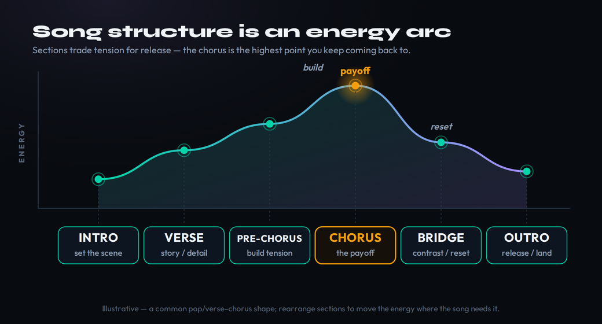
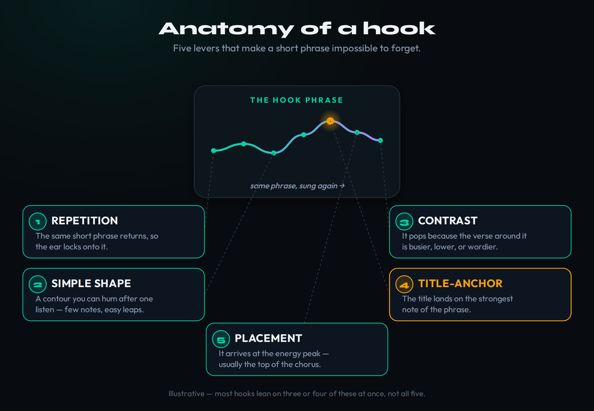
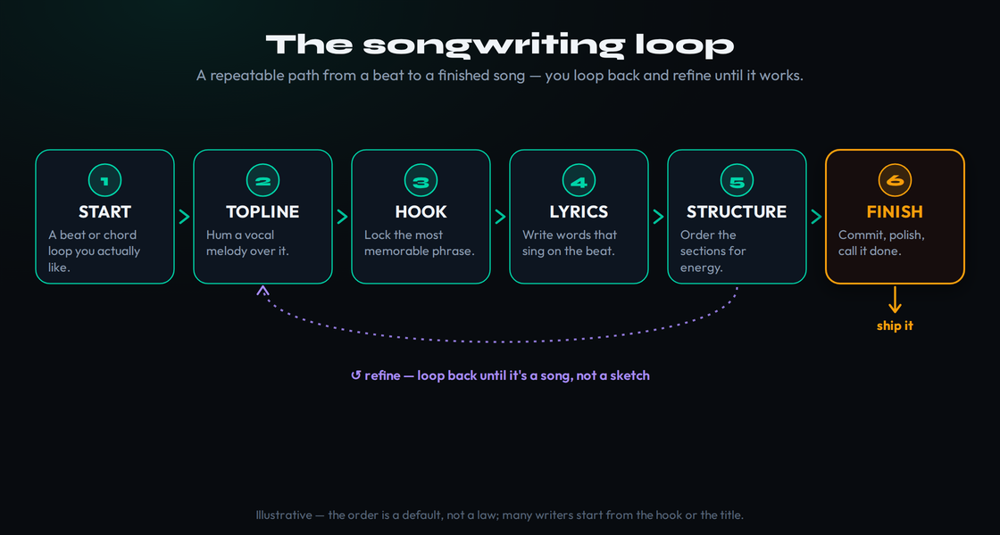

You can make a beat. You can build a chord progression that moves, program drums that knock, and get a loop to a place where it sounds like a record. And then the loop plays for the hundredth time and nothing happens — no melody, no words, no song. That gap, between a great eight-bar loop and an actual song someone can sing back to you, is where most producers get stuck. This guide is about crossing it. Not with a fill-in-the-blanks template, but with a repeatable way to find a topline over music you already made, shape it into sections that build and release, write a hook worth repeating, put words to it, and — the part nobody teaches — finish.
Why generic songwriting advice fails producers
Search “how to write a song” and almost everything you find is written for a different person than you. It assumes you sit down with an acoustic guitar or a piano, strum a few chords, and sing over them until a melody appears. The chords come first, then the melody and words arrive together, and the “production” is something you bolt on later or hand to someone else. That is a real and historic way to write, and none of it maps onto how you work.
You start from the other end. You already have the beat or the loop — often a finished-sounding one — before a single word or vocal note exists. The instrumental is not an accompaniment you add to a song; it is the thing the song has to be discovered inside of. That inversion changes the advice. “Find chords that fit your melody” is useless when the chords are already there and locked. The real skill is the opposite: hearing the melody that is hiding inside chords you have been staring at for an hour.
There is a second reason generic advice slides off. Most of it treats the song as words-first — write meaningful lyrics, then set them to music. In modern productions the order is usually reversed and the priorities are too. The sound of the vocal — its rhythm, its melody, the shape of the syllables against the beat — carries more of the song than the literal meaning of the words does. A topline that feels right with placeholder gibberish is most of the way home; perfect words on a melody that fights the beat are not a song at all. So we work in that order: melody and rhythm first, meaning second.
The beat-first reframe is freeing once you accept it. Your instrumental has already made dozens of decisions for you. It set the key, the tempo, the harmonic rhythm, the energy, the genre, and the emotional weather. You are not writing a song on a blank page. You are writing the one song that this specific loop is asking for — and the loop will tell you what it wants if you stop treating the vocal as an afterthought and start treating it as the lead instrument it is. Everything below assumes you are working this way: a loop is playing, and your job is to sing the song out of it.
One more decision the beat makes for you is the emotional weather, and it is the one producers most often ignore. Every loop has a mood baked in — the chord quality, the tempo, the sound design all point at a feeling before you sing a word. A bright, fast, major-key loop asks for a different lyric than a slow, detuned, minor one, and forcing a triumphant topline onto a melancholy beat produces that uncanny mismatch where everything is in tune and nothing connects. Name the feeling the loop already has before you write, then write toward it instead of against it. The beat is not a neutral backdrop; it is the first line of the story.
Song structure: sections as tension and release
Before you write a note of melody, understand what you are writing toward, because structure is the container that gives a topline somewhere to go. A song is not a uniform block of music; it is a sequence of sections that deliberately trade tension for release. The verse holds back so the chorus can pay off. The pre-chorus tightens the screw. The bridge breaks the pattern so the last chorus hits like the first one never could. If you have spent time arranging your instrumental, this will sound familiar — songwriting structure and arrangement are the same energy curve viewed from two sides.
The most common shape in popular music is verse–chorus, often with a pre-chorus and a single bridge: intro, verse, pre-chorus, chorus, verse, pre-chorus, chorus, bridge, final chorus, outro. Older and folk forms use AABA, where a repeated main section (A) is interrupted once by a contrasting B. You do not need to memorize a catalog of forms. You need to internalize the one principle underneath all of them, which is that listeners feel a song as a rise and fall of energy, and every section earns its place by either building tension or releasing it.

Read that arc as a set of jobs. The intro sets the scene and earns a few seconds of patience. The verse carries information — the story, the detail, the setup — and usually sits lower and busier, with more words and a more conversational melody. The pre-chorus is a ramp: it narrows the harmony, lifts the melody, and often strips the lyric down to a single building thought, all to make the listener lean forward. The chorus is the payoff — the highest, simplest, most repeated melody in the song, the part a stranger sings back. Then the bridge does the one thing nothing else does: it leaves. New chords, a new melodic shape, sometimes a new point of view, so that when the final chorus returns it feels like coming home.
For a producer, the practical move is to map sections onto your arrangement before you write the vocal, because the instrumental energy and the vocal energy have to agree. If your drop is the biggest moment in the beat, that is your chorus, full stop — do not try to put your quietest, most intimate vocal there. If your verse section in the beat is sparse, good: that space is where a busier, wordier vocal lives. Sketching this on paper or with our arrangement energy-arc tool takes two minutes and saves you from the most common beginner failure, which is a song where the music and the vocal are fighting over who gets to be the loud part. If the harmonic side of this feels shaky, our guide to music theory for producers covers the bridge and key changes that make the contrast work, and the Bible entries on the verse, chorus, and bridge define each section precisely.
Two structural decisions trip producers up specifically because they come from the beat-making world. The first is section length: a loop repeats happily for eight bars, but a vocal section that long with no change starts to sag, so verses usually run sixteen bars and choruses eight, and the vocal has to introduce its own variation even when the beat does not. The second is the vocal entrance — the single most important arrangement choice in a song with a topline. The moment the lead vocal first arrives resets the listener’s attention, so use the intro to withhold it, and let the first sung line land on a downbeat the arrangement has cleared space for. A great vocal that enters in a cluttered bar gets swallowed; the same line entering into a brief gap feels like the song beginning.
Writing the topline melody over your beat
The topline is the lead vocal melody, and finding it over an existing loop is the core skill this whole guide is built around. Here is the single most important thing to know: you find a topline by singing, not by thinking. Loop your section, turn the music up loud enough to feel it, and make sounds over it — humming, nonsense syllables, “la,” whatever — without trying to be good and without recording anything yet. Your goal is not to compose; it is to stumble into a phrase that feels inevitable, the melody the loop was already implying. You will sing twenty bad phrases before one snaps into place. That ratio is normal. It is the job, not a sign you cannot do it.
Three principles turn that flailing into a method. The first is rhythm before pitch. A melody is a rhythm first and a sequence of pitches second, and the rhythm is where the groove of the vocal lives. Before you worry about which notes, find where the phrases land against the beat — on the one, pushing ahead of it, dragging behind it, leaving a bar of silence. Tap or speak the rhythm of a phrase until it feels good against the drums, and the pitches will have somewhere to sit. Most amateur toplines are rhythmically square, every phrase starting on beat one, and that squareness is what makes them feel like exercises instead of songs.
The second principle is motif, repetition, and variation. A strong melody is not a stream of new ideas; it is a small idea — a motif, two or three bars long — stated, repeated, and then varied. Repetition is what makes a melody learnable; variation is what keeps it from being boring. Sing your motif, sing it again exactly, then sing it a third time with one change — a higher ending, a rhythmic twist, one different note. That state–repeat–vary shape is most of what separates a melody from a noodle. Our guide to making melodies goes deeper on contour and interval choice, and the same motif logic that drives a chord progression that works drives a topline.
The third principle is stay in key, then break it on purpose. Your loop is in a key, and your melody needs to mostly live in that key's scale or it will sound wrong rather than interesting. If you do not know the key of your beat, find it — our chord and key reference and tempo-key-chord tool will tell you in seconds — and keep the scale degrees in front of you while you write. The most singable, hook-friendly melodies lean on the stable notes of the key (the root, the third, the fifth) on strong beats and pass through the others. Once you can hit the key reliably, the occasional note that steps outside it becomes a deliberate color instead of a mistake. The melody and key Bible entries cover the theory, but you do not need it to start — you need to sing, in key, against the rhythm.
One practical workflow point: capture everything. The instant a phrase feels right, record it on your phone or punch it in, because good toplines evaporate the moment you stop singing them and you will not remember it tomorrow. And train the underlying skill in the background — ear training is what eventually lets you hear a melody in your head and sing it accurately on the first try, which is the difference between hunting for a topline and simply writing one down.
Two more habits make toplines sit right. Write within your range — or the range of whoever will sing it — because a melody that lives at the top of your voice will be strained on every take, and one that sits comfortably will be sung with character instead of effort. Sketch the melody where it is easy to sing, then move whole phrases up or down an octave to find the sweet spot rather than reaching for notes you cannot control. And write in call-and-response with the beat: leave space where the instrumental has a fill or a hook, and sing through the bars where the beat is plain. A topline that talks with the track, trading phrases with it, feels arranged; one that sings constantly over everything feels like karaoke laid on top.
The hook: memorable, not annoying
The hook is the part of the song that survives. It is the phrase a stranger hums a week after hearing the song once, usually the title sung on the chorus melody. A song can have a serviceable verse and a forgettable bridge and still be a hit if the hook is undeniable; the reverse is almost never true. So while the hook is one short phrase, it deserves more of your attention than any other ten seconds of the song. The good news for a producer is that hooks are not magic. They are engineered, and the levers are knowable.

Start with repetition, the most powerful and most underused lever. A hook becomes a hook by coming back — the same phrase, the same notes, two, three, four times. Beginners are afraid of repeating themselves and keep changing the melody out of a misplaced sense of variety; professionals repeat the hook far more than feels comfortable, because repetition is literally how the ear learns and locks onto a phrase. If you are unsure whether you are repeating enough, you probably are not.
Then simplicity of shape. The most memorable hooks have a melodic contour you can sing after one listen — few notes, small leaps, an obvious arc. Complexity is the enemy of memorability here. Save your clever intervals for the verse; the hook should feel like something the listener already half-knew. Contrast is what makes that simplicity pop: a hook stands out because the verse around it is busier, lower, more crowded with words, or more rhythmically restless. The chorus melody can be plain precisely because the verse made you wait for it. If your verse and chorus feel like the same energy, neither one is doing its job — a problem you will recognize from writing pop, where that verse-to-chorus lift is everything.
The last two levers are about placement. The title-anchor is the move of landing the song's title on the strongest, highest, or most repeated moment of the hook, so the one phrase you most want remembered is fused to the catchiest melodic instant. And literal placement — the hook arrives at the energy peak, the top of the chorus, the spot the whole arrangement has been building toward. A great hook in the wrong place lands soft. The hook Bible entry catalogs the types, but the working rule is simple: write a short phrase, anchor the title to its best note, repeat it more than feels safe, and make the verse earn it.
Two refinements separate a good hook from a great one. Watch word density: the hook should usually carry fewer words than the verse, because space around the phrase is what lets it ring, and cramming the catchiest melodic moment full of syllables buries it. Often the strongest hook is a handful of words with room to breathe. And consider extending the idea past the vocal — a post-chorus, an instrumental answer, or a vocal chop of the hook gives the ear a second, wordless thing to grab onto, which is why so many modern productions repeat a sung fragment as a melodic riff after the chorus. The test for all of it is brutal and simple: play the section once for someone, wait an hour, and ask them to sing it back. If they cannot, the hook is not done yet.
Lyrics: from title to prosody to image
Now the words. For a producer working beat-first, the trap is sitting down to “write lyrics” as if they were a poem to be composed and then somehow attached to the melody. They are not. The melody and rhythm already exist, and the words have to be poured into that mold. The most useful thing you can do is start writing words at the same pitch and rhythm you have been singing — replace the gibberish syllables with real ones that keep the same shape.
Work title-first. Before you write a single line, find the one phrase the song is about — usually short, often the thing you will sing in the hook. The title is the seed and the filter: it tells you what the verses are allowed to be about and gives you a target for the hook to land on. A song with a strong title and a clear central idea half-writes itself, because every line now has a job, which is to set up or pay off that one idea. A song without one becomes a pile of unrelated pretty lines that never adds up.
The technical craft that matters most here is prosody — matching the stress of the words to the stress of the music. Spoken language has stressed and unstressed syllables (“re-MEM-ber,” not “RE-mem-ber”), and music has strong and weak beats. Prosody is the alignment of the two: stressed syllables fall on strong beats and important notes; unstressed syllables fall on the weak ones. When prosody is right, the words feel sung rather than crammed in, and the listener barely notices the craft. When it is wrong — a stressed syllable shoved onto a weak beat, or the natural emphasis of a word fighting the melody — the line sounds awkward no matter how good the idea is, and you will feel it without being able to name it. Singing your draft lines out loud, over the beat, is the only reliable test. If your mouth fights the melody, the prosody is off; rewrite the words, not the tune.
Two more habits separate lines that land from lines that don't. Favor concrete images over abstractions: “your keys still on the counter” does more than “I miss you,” because specific, sensory detail lets the listener feel the thing instead of being told about it. And let rhyme serve the line, not rule it — a forced rhyme that bends the meaning to hit a sound is worse than no rhyme, and near-rhymes and internal rhymes often sit better in modern vocals than perfect end-rhymes. If you are writing in a more conversational, image-driven lane like indie pop, lean further toward the specific and away from the obvious rhyme. And remember that the words are the last layer the listener consciously processes — a vocal that is mixed to sit right, which our vocal mixing guide covers, will carry a decent lyric far better than a brilliant lyric buried under the beat. For deeper grounding in how stress, meter, and key interact, the theory guide is the companion to this section.
Two strategic choices shape the whole lyric. The first is point of view: decide early whether the song is “I,” “you,” or “we,” and hold it, because drifting pronouns quietly confuse the listener about who is speaking to whom. Direct address — singing “you” — tends to pull a listener in faster than third-person narration. The second is the division of labor between verse and chorus: let the verses be specific and the chorus be universal. Verses are where concrete, particular detail lives — names, places, the keys on the counter — while the chorus zooms out to the feeling everyone shares, which is exactly why a stranger can sing your chorus before they know what your verses are about. Specific verses earn a universal chorus; a song that is vague everywhere connects nowhere.
The process: write badly first, edit later
Everything above is craft you can learn. The reason most songs never get written is not a craft problem, though — it is a process problem, and specifically it is the habit of trying to create and judge at the same time. You sing a phrase, your inner critic says it's bad, you stop, you delete it, you try to think of something better, and nothing comes because the part of your brain that generates ideas and the part that evaluates them cannot run at full power simultaneously. The single most valuable working habit in songwriting is to separate those two modes completely.
In practice that means write badly, on purpose, first. Give yourself permission to sing the worst topline imaginable, to write placeholder lyrics that are pure cliche, to fill every section with garbage — just to get a complete, ugly draft of the whole song into existence. A finished bad draft is infinitely more valuable than a perfect first verse and nothing else, because you can edit a bad draft and you cannot edit a blank space. Only once the whole shape exists do you switch into editor mode and fix it, line by line, with the critic you were suppressing now fully welcome.
Constraints help more than freedom. A blank canvas is paralyzing; a small box is generative. Limit yourself to four chords, or twenty minutes, or one vowel sound for the hook, or “the whole verse has to be about a single room.” Tight constraints force decisions, and decisions are momentum. This is the same muscle that lets you develop a recognizable sound — a sound is just a set of constraints you return to on purpose.
Collaboration is a constraint too, and worth naming because so much modern songwriting is co-writing. Toplining — one person writing melody and lyrics over another's track — is itself the beat-first method with the labor split, and the same skills apply. Whether you write alone or with someone, the failure mode is the same: endlessly polishing the opening while the song stays unfinished. Which brings us to the part that actually matters.
When you do stall — and you will — the fix is almost never to stare harder at the blank line. Writer’s block is usually an input problem, not an output one: you have run dry because nothing new has gone in. The reliable unstickers are all about feeding the well or lowering the stakes. Free-write about a concrete object or memory tied to your title for two minutes without stopping, and mine the result for one usable image. Switch instruments or switch rooms to break the loop your brain is stuck in. Or simply make the task smaller — “write one bad line” instead of “write the verse.” The block is rarely a lack of talent; it is your editor strangling your writer again, and the move is always the same: separate them, lower the bar, and keep your hand moving.
Finishing: turning a sketch into a song
Finishing is the real skill. Not melody, not lyrics, not theory — finishing. The producers who write songs and the producers who have a hard drive full of eight-bar loops are usually separated by nothing except the willingness to take an imperfect idea all the way to done. Every part of the process conspires against this. The new idea is always more exciting than the old one. The unfinished song is full of problems; the unstarted one is pure potential. Finishing means choosing the boring, problem-filled reality of completing this song over the dopamine of starting a new one.

The loop above is how a song actually gets made: a beat, a topline, a hook, lyrics, a structure — and then, crucially, you go back around. The first pass through is never a song; it is a sketch. The real work is the second and third laps, where you refine the topline now that you know the hook, fix the prosody now that the words exist, and tighten the structure now that you can hear the whole thing. What you must not do is loop forever. At some point refining becomes hiding, and you have to declare the song done and move on. A practical rule: when a full pass produces only tiny changes, you are done — ship it.
If you struggle to finish — and almost everyone does — the discipline that fixes it is the same one that fixes unfinished beats, and we wrote a whole guide on it: how to finish the beats you start. The short version is to set a deadline, lower the bar from “perfect” to “complete,” and treat a finished mediocre song as a win, because finishing is a skill that compounds. Your tenth finished song will be dramatically better than your first, and you only get to the tenth by finishing the first nine. The arrangement timer is a small trick for this: give each section a hard time budget and you stop polishing and start completing. Write the song, finish the song, start the next one. That loop, run enough times, is the entire craft.
One mindset shift makes finishing easier: stop treating the current song as your masterpiece. The pressure that keeps a song unfinished is almost always the belief that this one has to be perfect, and that belief is a lie your ego tells to protect you from the risk of finishing something flawed. The professional’s reframe is that this is just one song of the hundreds you will write, a single rep, and the only way it matters is finished and out in the world where you can learn from it. There is a real difference between a song that is finished — complete, decided, done — and one that is merely abandoned mid-thought, and the difference is usually one honest question: is the song actually there? If the structure holds, the hook lands, and the words sing, it is there. Stop polishing and call it.
Write a Song: 3 Drills
Run these in order, on one of your own loops. Each builds a piece of the beat-first method so you stop guessing and start finishing.
- Pick a finished eight-bar loop of yours and identify its key with the chord and key reference.
- Loop it, turn it up, and hum melodies over it for ten minutes using only nonsense syllables — no words, no judgment, recording your phone the whole time.
- Listen back, find the one phrase that felt inevitable, and build a state–repeat–vary motif from it. You are not writing lyrics yet; you are finding the tune.
- Write down a single short title phrase — three or four words about one idea.
- Sing that title as a hook: a simple, repeatable melody, anchored so the title lands on the highest or strongest note.
- Repeat it more than feels comfortable, then write a verse melody that is busier and lower so the hook pops by contrast. Test the prosody by singing it out loud over the beat.
- Using one of your beats, write a complete bad draft — verse, pre-chorus, chorus — in a single sitting, with placeholder lyrics allowed everywhere.
- Map it onto the beat's energy with the energy-arc tool so the chorus lands on the biggest moment.
- Take two more laps around the loop: fix the prosody, sharpen the images, tighten the structure. When a full pass changes almost nothing, call it finished — then start the next one.
Frequently Asked Questions
No — you need to be able to sing in key and feel the beat, and you can do both by ear. Theory speeds things up by naming what you are already hearing, which is why it is worth learning over time, but plenty of great songs were written by people who could not name a single chord. Start by singing over your loop; pick up theory as you go.
For beat-first writing, the melody and rhythm come first, with placeholder syllables, and the real words get poured into that shape afterward. The sound of the vocal carries more of the song than the literal meaning, so a topline that feels right with gibberish is most of the way home. Find the tune, then find the words that fit it.
The topline is the lead vocal melody and lyric written over an existing instrumental — the melody and words on top of the track. Toplining is the standard way modern songs are written: one person makes the beat, another writes the topline over it. As a producer who starts from a loop, you are already toplining.
Sing, do not think. Loop the section, turn the music up, and make sounds over it with nonsense syllables until a phrase feels inevitable. Keep the rhythm interesting (do not start every phrase on beat one), build from a small repeated motif, and stay mostly in the key of the beat. Use our melody guide for contour and interval craft.
Usually it is a structure-and-contrast problem: the verse and chorus sit at the same energy, so neither one lifts. Make the verse busier, lower, and wordier, and the chorus simpler, higher, and more repeated, so the hook pops by contrast. Mapping sections onto your arrangement first prevents this.
The line between catchy and annoying is craft, not repetition itself — catchy hooks repeat a good phrase, annoying ones repeat a grating one. Aim for a simple, singable shape, anchor the title to its strongest note, give it contrast against the verse, and place it at the energy peak. If a hook is irritating, the phrase or its placement is the problem, not the fact that it repeats.
Prosody is the alignment of word stress with musical stress — putting the emphasized syllables of a word on strong beats and important notes. When it is right, the words feel sung; when it is wrong, the line sounds awkward no matter how good the idea. Test it by singing the line out loud over the beat: if your mouth fights the melody, rewrite the words.
Separate creating from editing — write a complete bad draft first, then fix it — set a deadline, and lower the bar from perfect to complete. Treat a finished mediocre song as a win, because finishing is a skill that compounds. The same discipline that finishes beats applies here; see finishing what you start.